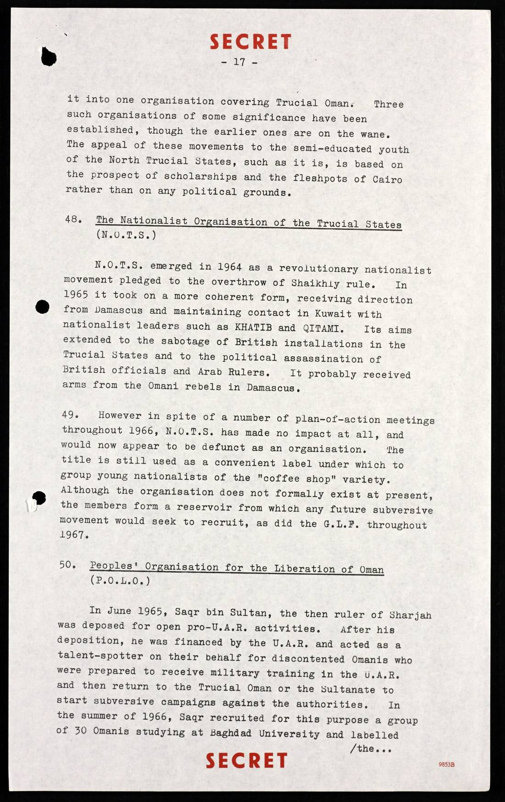

1967 to 1968 · Secret British Cabinet intelligence report on security in the Gulf
British intelligence on the Arab Nationalist Movement in Kuwait
What it is
The report names Ahmad Khatib and Jasim Qatami as the two best known Kuwaitis in the Kuwait branch of the Arab Nationalist Movement. It notes they resigned from the Assembly in December 1965 in protest at the ban on political parties, and that the 1967 elections were rigged against them.
Why it matters
Even British intelligence recorded in plain words that the 1967 elections were rigged against Jassim.
Who is meant
The same Jassim Al-Qatami as the records that give his full name: Director of Police, resigned at Suez, later a nationalist member of the National Assembly.
Page copies


Original text
English translation
Notes
Page 38 of the same report mentions Khatib and Qatami again as contacts in Kuwait for nationalists from the Trucial States. That page is saved with this record.
Others named
Sources
The National Archives, London, digitised by the Arabian Gulf Digital Archive (agda.ae). Images reproduced by permission of The National Archives, London, England.
Archive reference
- CAB 163/73 · Middle East: security threat to the Persian Gulf; intelligence reports
How this text was made: Typed from the archive's own text reading of the scan, corrected against the scan where the reading was garbled. … marks text left out. Arabic translation by Claude; please review.
Open in the interactive site